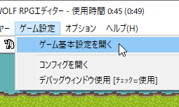
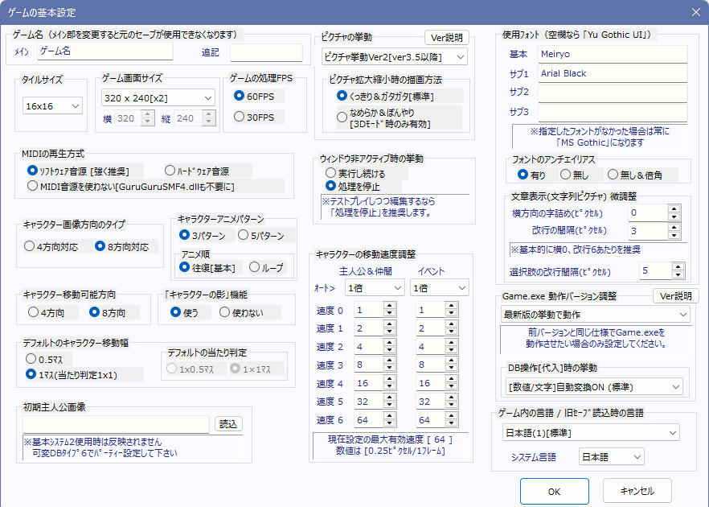

【ゲーム設定】
ゲーム設定には次の3つがあります。
・ゲームの基本設定
- ピクチャの挙動（バージョン説明）
・コンフィグ
・デバッグウィンドウ使用
[ ゲームの基本設定 ]

ゲームの基本設定は、「ゲーム設定」→「ゲームの基本設定」から実行することができます。実行時には以下のウィンドウが表示されます。

各種ゲーム設定を行うことができます。
ゲーム名－メイン ：
ウィンドウモードでプレイする際、ウィンドウのタイトルバーに表示されるタイトルです。ゲームデータの作成時にもデフォルトフォルダ名として使用されます。
この名前を変更すると元のセーブデータが使用できなくなります。
ゲーム名－追記 ：
この部分には、バージョン番号などを記述できます。
この追記部分は、変更されても、従来のセーブデータがそのまま使用できます。
タイルサイズ ：
タイルのサイズを16x16、32x32、40x40、48x48から選択できます。
ゲーム画面サイズ ：
ゲームの画面サイズを以下の中から選択できます。
320x240（倍）・640x480・800x600・854x480（16:9）・960x720・960x540（16:9）・
1024x768・1024x576（16:9）・1280x960・1280x720（16:9）
320x240サイズの場合だけ画面が2倍サイズで表示されます。
画面サイズは描画負荷に大きく関わるため、注意してください。
ゲームの処理FPS ：
ゲームの処理FPS（1秒間あたりの描画回数）を30FPSと60FPSから選択できます。60FPSの方がなめらかですが処理が重くなります。60FPSの場合はイベント処理時間が16msを超えると重くなり始め、30FPSの場合は33msが実質的な限界負荷となります。
MIDIの再生方式 ： MIDI曲の再生形式をハードウェア音源とソフトウェア音源から選べます。
・ソフトウェア音源：
DirectShowによるMIDI再生を行い、誰でも同じ環境で再生されます。こちらを強く推奨します。
・ハードウェア音源：
プレイヤー側のパソコンの音源に応じた音色で再生されますが、あまり推奨しません。
・MIDI音源を使わない[GuruguruSMF.dllも不要に]：
MIDI音源を使いません。ゲームデータ作成時、GuruguruSMF.dllというファイルがゲームデータにコピーされなくなります。
キャラクタ－画像方向のタイプ ：
ゲームに使用するキャラ画像を4方向対応にするか8方向対応にするか選択します。使用できるキャラ画像のフォーマットに影響します。
キャラクタ－アニメパターン ：
キャラ画像のアニメパターンを3パターンか5パターンか選択します。使用できるキャラ画像のフォーマットに影響します。
キャラクタ－移動可能方向 ：
ゲーム中のキャラクター移動方向を4方向のみにするか、8方向移動可能にするかを選択します。キャラ画像のフォーマットには影響しませんので、4方向のみのキャラ画像も8方向移動できます。
「キャラクターの影」機能 ：
キャラクターに影を付ける機能のオンオフを指定します。影を付けて何がいいかというと、ジャンプさせたときやキャラの高さを変更したとき、影画像だけが地面に残ってキャラだけ浮き上がるので、よりキャラクターが浮いているように演出することができます。
デフォルトのキャラクター移動幅 ：
キャラクターが移動する際の一歩の幅を指定します。0.5マスにすると細かい幅で移動できます。
デフォルトの当たり判定 ：
キャラクターの当たり判定を横1×縦0.5マスにするか、縦横1×1マスにするかを選べます。主人公の当たり判定はここで指定したものに固定されます。イベントキャラクターの当たり判定も同じですが、こちらはイベントエディタの「当たり判定正方形」のオプションで当たり判定を後から変更することができます。
初期主人公画像 ：
ゲーム開始時の主人公のキャラクター画像を指定します。「読込」ボタンを押すと画像を選択して入力することができます。
※基本システムを使用している場合は機能しませんので、基本システムの可変データベース「主人公ステータス」「パーティー情報」で設定が必要です。
キャラクターの移動速度調整 ：
Ver 1.05以前は主人公とキャラクターの移動速度が異なっていたため、その仕様を再現するために入れられた項目です。プレイヤー1.0倍、イベント2.0倍にすることで、以前と同じ動作が得られます。新規にゲームを製作する場合は、プレイヤー・イベントともに1.0倍にすることを推奨します。
また、主人公/イベントの移動速度の7段階の速度を、それぞれ手動で細かく設定することもできます。
※数値を変えても速度が変わらないように見える場合があります （2016/12/30追記）
キャラクターはマスごとの区切りで必ずいったん止まる都合上、速度が変わらないように見える場合があります。
たとえば移動マスが「半マス」、タイルサイズが「16ピクセル」の場合は、速度を16～31の範囲のどの数値にしても、移動させ続けると見た目上の速度は等速になってしまいます。
（16ピクセルタイルの場合、速度11～15なら1マス進むのに3フレーム、16～31なら2フレーム、32なら1フレームかかる）
ピクチャの挙動 ： (Ver3.50より）
ピクチャ挙動を「ピクチャ挙動Ver2[動作3.50以上]」と「ピクチャ挙動Ver1[旧挙動]」から選べます。
「レイヤー挙動」と「【表示】コマンド指定の挙動」に以下の差があります。基本は「Ver2挙動」で問題ありません。
●ピクチャ挙動Ver2[動作3.50以上] Ver1挙動より自由度が高く、挙動に統一感があります。ただしGame.exe動作バージョンが3.50以上必須です。
・レイヤー挙動：ピクチャ番号に応じた表示レイヤーが以下のようになります。
「-1～-99999なら『フォグの下 ・ ★マップチップの上』に表示」
「-100000～-199999なら『★マップチップより下 ・ キャラや▲マップチップの上』に表示」
「-200000～-299999なら『キャラや▲マップチップより下 ・ マップの上』に表示」
「-300000～-399999なら『マップより下 ・ 遠景の上』に表示」
「-400000以下なら『遠景の下』に表示」
・【表示】コマンド時の挙動：
すでに同じIDでピクチャが表示されている場合、処理途中でも「座標」や「不透明度」はその瞬間のパラメータを引き継ぎます。
- つまりすでにピクチャ表示済みの場合、常に【移動】コマンドと同等の処理が行われます。
- また「処理時間」ありで「消去」される場合も、「実行された瞬間の座標」で止まって消去されるという自然な動作になります。
・【ファイル指定時】の特殊文字変換の挙動が安定：
「ファイル直接指定」時、代入特殊文字(\s[0]等)の変換がより安定して行われます。
（Ver1ではファイル名の先頭に「<」があると正常に変換できません）
・【システム変数】Sys1～6のメッセージ関連と、Sys26～27の選択肢の余白、の初期値が
より画面サイズに適したものになります。
・【タイルサイズ16だと、改行の間隔がVer1の2倍に変わります】
Ver2では、どんなときも「指定した通り」の改行間隔になります(テストプレイ中にタイトルバーに表示されるマウス座標基準）。
※「ゲーム基本設定」にある「文章表示」の「改行の間隔」「選択肢の改行間隔」、そして
特殊文字の「改行幅指定\space[?]」による改行間隔が
タイルサイズ「16」の場合のみ「ピクチャ挙動Ver1」の「2倍」に変わるので注意して下さい。
→ その場合、「ゲーム基本設定」の「改行の間隔」や\spaceを元の半分の数値にすることで同じにできます。
●ピクチャ挙動Ver1[旧挙動] 旧挙動に合わせて作っていた人向けです。
・レイヤー挙動：ピクチャ番号に応じた表示レイヤーが以下のようになります。
「-1～-99999の場合は『キャラの下 ・ マップの上』に表示」
「-100000以下の場合は『マップの下 ・ 遠景の上』に表示」
・【表示】コマンド時の挙動：
すでに同IDでピクチャが表示されている場合、「異なる画像で【表示】」または「文字列ピクチャの【表示】」をした場合に、
- 処理時間が残ってる状態だと『不透明度』が「直前のピクチャ指定時点の値の状態に戻る」
- 文字列から画像、画像から文字列、文字列から文字列に切り替わるときに「新しい場所に瞬間表示される」
という挙動になります。
- 「ファイル読込ピクチャ」で全く同じ画像を【表示】した場合のみ、【移動】と同じ処理になります。
- 他にも、「処理時間」ありで「消去」されるときは「移動予定先に瞬間移動して消え始める」という挙動になっています。
・【システム変数の挙動に変化】 他、Sys1～6、Sys26～27のメッセージウィンドウ、選択肢ウィンドウ、
ポーズカーソルの「初期値」や「-1」を格納したときの値が、
画面サイズや画面倍率などを考慮していない昔の値のままになります。
・【改行の間隔が変化する可能性あり】「ゲーム基本設定」にある「文章表示」の「改行の間隔」や
\space[?]の特殊文字による改行幅が、タイルサイズ16だと入力値の「半分」になります。
→ これ自体はバグでしたが、従来の作品は全てこれに合わせて作られているので
ピクチャ挙動で切り替えられるようにしています。
ピクチャ拡大縮小時の描画方法 ：
拡大縮小時の描画方法を、「くっきり＆ガタガタ」と「なめらか＆ぼんやり」から選択できます。
「なめらか＆ぼんやり」は3Dモード時のみ有効です。
※Ver2.22から「全画面時」「ウィンドウ拡大時」の描画処理が異なり、
「くっきり＆ガタガタ」にしていると全画面化・拡大化を行った際も「ガタガタ」で拡大され、
「なめらか＆ぼんやり」にしていると全画面化・拡大化を行った際も「なめらかぼんやり」で拡大されます。
→ つまりドット絵重視のゲームの場合は「くっきり＆ガタガタ」、
そうでなければ「なめらか＆ぼんやり」に切り換えていただいた方が見栄えがよくなります。
ウィンドウ非アクティブ時の挙動 ：
ウィンドウが非アクティブになったとき（ゲーム以外の別ウィンドウをクリックしたとき）の動作を指定します。
「実行し続ける」と「処理を停止」から選択できます。
使用フォント ：
基本フォントとサブフォント3種類を指定できます、何も指定しなくても構いません。ただし、フォント名は正しく入力してください（たとえば「ＭＳ
ゴシック」のＭＳは全角文字です）。ここでサブフォントに指定したものは、メッセージ中で\font[1]（サブフォント1に変更）の特殊文字を使用することで一時的に変更することができます。
なお、拡張子が.fon形式のフォント（「WST_Engl」や「Small Fonts」などのAdobe
Typeのフォント）は使用することができません（そのフォントで文章を表示しようとした瞬間にゲームが強制終了するそうです）
なお、空欄にすると言語別のデフォルトフォントが使われます。基本的に、Windowsに標準搭載されていそうなフォントを順に探して使用します。
例えば「ゲーム内の言語」が「日本語」ならば、フォントが空欄か見つからない場合は「Yu Gothic UI」(Win10～11標準)→「Meiryo」(Win7～8標準)→「MS
Gothic」の順に探して使用します(Ver3.176以降)。
※外部フォントファイルの読み込みについて
プレイするPCに使用フォントがインストールされていない場合は自動で「ＭＳ
ゴシック」になりますが、フォントファイルを同梱して読み込むことも可能です。その場合はDataフォルダ内（※Dataごと暗号化しない場合のみ）か、Game.exeと同じ場所にフォントファイル（ttf、ttc形式のみ）を同梱してください。
※フォント名は正確に入力してください。フォント名は、Windows側から「ttfファイルを右クリック」→「プロパティ」→「詳細」タブの「タイトル」に書かれています。(Ver2.20から要求される正確性が増した可能性があります）。また、海外展開する場合は英語のフォント名を入力する必要があります。
フォントのアンチエイリアス ：
フォントにアンチエイリアス（文字のカドを滑らかにする機能）の有無を設定します。小さな文字がたくさん表示されるゲームでは、「無し」を推奨します。
・「有り」 … フチがなめらかな文字になり、基本的に読みやすいのですが、小さな文字は見にくくなります。
・「無し」 … フチがガタガタの文字になります、フォントサイズが小さくても比較的見やすいでしょう。
・「無し＆倍角」 … フチがガタガタの、通常の二倍表示のフォントを表示します。レトロ風のゲームに向いているでしょう。
文章表示（文字列ピクチャ）微調整 ：
メッセージ表示時や、文字列ピクチャ表示時におけるフォントの微調整を行います。「横方向の字詰め」は1文字ごとの横幅の空白を指定するもので、「改行の間隔」はメッセージ表示時の改行間隔を指定します。「選択肢の改行間隔」は、選択肢を表示した際の各選択肢の改行幅を指定します。
Game.exe 動作バージョン調整 ：
おおよそ旧バージョンの仕様でGame.exeを動作させることができます。
最新版を導入して表示が狂ってしまったときや、挙動が変わってしまった場合などに変更してみてください。
切り替えられるバージョンごとの機能説明はこちらです。
DB操作[代入]時にデータ型を自動変換する？ (Ver3.566より)
「格納先に合わせた[数値/文字]変換ON (標準)」 と 「変換OFF (型が違うと中断&ｴﾗｰ表示)」から選べます。
DB操作コマンドの「DBに代入」あるいは「変数に代入」時、「変数の数値または文字列のデータを、格納先のタイプ（数値/文字列)に合わせて自動変換する」か、「自動変換を許可せずにエラーを表示する」かを切り替えできます。
柔軟にデータベースのデータを扱いたい人はONに、厳密にデータを扱いたってエラー表示を見たい人はOFFにしてください。
【変換される例】
「格納先に合わせた[数値/文字]変換ON」にすると、たとえば文字列を格納可能な「キャラ名」項目に対しての代入、
CDB[0 : 0 : 0 ] (キャラ名) = "名前テスト" ※文字列を格納
CDB[0 : 0 : 0 ] (キャラ名) = 15 ※数値を格納
を行ったとき、「キャラ名」項目に
文字列の"名前テスト" あるいは
文字列に変換された"15"という文字列 が「キャラ名」としてセットされます。
これがもし「変換OFF (型が違うと中断&ｴﾗｰ表示)」にしてあった場合は、【文字列】の項目に「= 15」と【数値】の代入を行うとエラーが表示され、代入処理は中断されます。
なお「格納先に合わせた[数値/文字]変換ON」でも、「数値」項目に「文字列」を格納しようとした場合は、先頭から読んで数値と認識できない文字列はすべて「0」として扱われます。
CDB[0 : 0 : 4 ] (レベル) = "テスト" のように「数値」項目の「レベル」に文字列「テスト」入れると、「レベル」値は0になります。
ゲーム内の言語 ：
日本語以外の言語でゲームを作成する際に使います。
「日本語(1)」「英語(2)」「西欧文字(3)」「中国語/簡体字(4)」「中国語/繁体字(5)」「ハングル文字(6)」から選択できます。
Ver3になってからはゲーム内の文字がここで選ぶ言語と違っていてもフォントさえ合っていれば正常に表示されますが、文字入力時のデフォルトフォントはここの言語設定に応じて切り替わるため、なるべく適切な言語を選んでください。
・システム言語 …… タイトルバーとエラーメッセージのみで使用される言語です。「日本語」と「英語」から選択できます。なお、プレイヤーのシステムロケール（Windowsの言語設定）が「日本語」以外の環境なら、自動的にシステム言語「英語」でプレイされます。
[ コンフィグ ]
「ゲーム設定」→「ゲームの基本設定」を選択するとconfig.exeが起動し、次のようなウィンドウが表示されます。

ゲームをプレイする条件を設定します。
グラフィック表示モード ：
グラフィック描画を「3Dモード」か「ソフトウェアモード」のどちらで行うか設定します。
デフォルトは「3Dモード」ですが、動作がおかしい場合は「ソフトウェアモード」に変更すれば安定する可能性があります。
なお、ソフトウェアモードは「セーフティモード」として用意されています。
3Dモードよりも回転や自由変形描画がガタガタになったり、トランジションの挙動が少し変化する場合があります。
ウィンドウ設定 ：
ゲーム画面の起動方法を「ウィンドウモード」か「全画面A」「全画面B」(フルスクリーン)かを設定します。
デフォルトは「ウィンドウモード」になっています。
使用するDirectXのバージョン ：
ゲームの描画に使用するDirectXのバージョンを「11」か「9」から選択します。
デフォルトは「DirectX 11」になっており、ウィンドウ拡大時のなめらか描画に対応しています。
（「3Dモード」かつ、「ゲーム設定」側の「ピクチャ拡大縮小時の描画設定」が「なめらか＆ぼんやり」になっている場合のみ有効）
処理の重さ ：
ゲーム画面の描画と処理の重さのバランスを調整します。
BGMの再生 ：
BGMとBGSの音声再生をON/OFFします。
SEの再生 ：
SEの音声再生をON/OFFします。
[ デバッグウィンドウ使用 ]
テストプレイ時にデバッグウィンドウを表示するかを設定します。
詳細は「デバッグコマンド一覧」を参照。